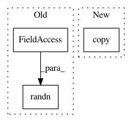

0742b80f3c175de082127ee73a7364e173fd60df,dipy/align/tests/test_sumsqdiff.py,,test_compute_residual_displacement_field_ssd_3d,#,122
Before Change
assert_allclose(actual, expected, rtol = rtol, atol = atol)
//Test residual != None
residual = np.random.randn(actual.size).reshape(actual.shape).astype(floating)
iut(delta_field, sigma_field, grad_G.astype(floating),
target, lambda_param, d, residual)
assert_allclose(actual, expected, rtol = rtol, atol = atol)
After Change
iterate_residual_field_ssd_3d(delta_field, sigma_field,
grad_G.astype(floating), residual, lambda_param, expected)
actual = d.copy()
ssd.iterate_residual_displacement_field_ssd_3d(delta_field,
sigma_field, grad_G.astype(floating), residual, lambda_param, actual)
// the numpy linear solver may differ from our custom implementation
In pattern: SUPERPATTERN
Frequency: 3
Non-data size: 3
Instances
Project Name: nipy/dipy
Commit Name: 0742b80f3c175de082127ee73a7364e173fd60df
Time: 2014-09-30
Author: jomaroceguedag@gmail.com
File Name: dipy/align/tests/test_sumsqdiff.py
Class Name:
Method Name: test_compute_residual_displacement_field_ssd_3d
Project Name: rtavenar/tslearn
Commit Name: 7a230980914c8a0223f0e04a54c9e6f240358e05
Time: 2019-02-07
Author: romain.tavenard@univ-rennes2.fr
File Name: tslearn/clustering.py
Class Name: KShape
Method Name: _fit_one_init
Project Name: nipy/dipy
Commit Name: 0742b80f3c175de082127ee73a7364e173fd60df
Time: 2014-09-30
Author: jomaroceguedag@gmail.com
File Name: dipy/align/tests/test_sumsqdiff.py
Class Name:
Method Name: test_compute_residual_displacement_field_ssd_2d